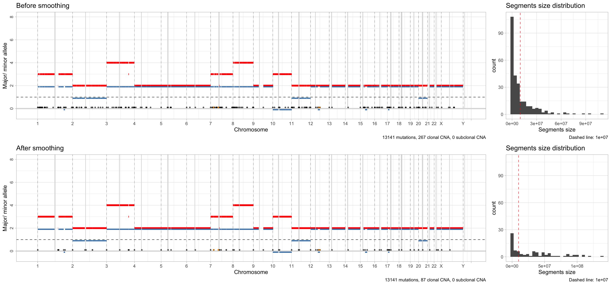
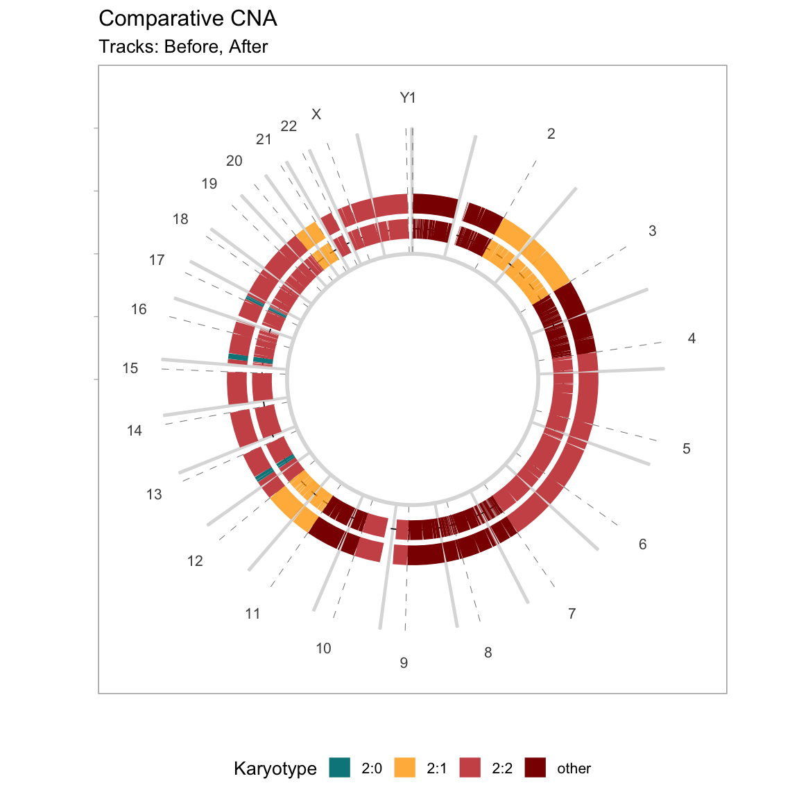

library(CNAqc)
#> ✓ Loading CNAqc, 'Copy Number Alteration quality check'. Support : <https://caravagn.github.io/CNAqc/>We work with the template dataset.
Smoothing works with a simple algorithm that merges, inside each chromosome, all contiguous segments that have the same absolute copy number values (minnor and major allele counts), and are separated by up to \(\delta\) base pairs.
The default value of \(\delta = 10^6\) (1 megabase).
# Before smoothing
print(x)
#> ── [ CNAqc ] n = 13141 mutations in 267 segments (267 clonal + 0 subclonal). Genome reference: GRCh38. ─────────────
#>
#> 2:2 [n = 7478] ■■■■■■■■■■■■■■■■■■■■■■■■■■■
#> 4:2 [n = 1893] ■■■■■■■
#> 3:2 [n = 1625] ■■■■■■
#> 2:1 [n = 1563] ■■■■■■
#> 3:0 [n = 312] ■
#> ℹ Sample Purity: 89% ~ Ploidy: 4.
# After smoothing
x = smooth_segments(x, maximum_distance = 1e6) # default
#> ℹ Smoothing chr1: 37 segments.
#> [1-24] [27-30] [31-33] [34-37]
#> ℹ Smoothing chr10: 8 segments.
#> [1-2] [3-4] [5-8]
#> ℹ Smoothing chr11: 22 segments.
#> [1-7] [8-9] [10-22]
#> ℹ Smoothing chr12: 13 segments.
#> [2-3] [12-13]
#> ℹ Smoothing chr14: 2 segments.
#> [1-2]
#> ℹ Smoothing chr15: 9 segments.
#> [1-5] [7-9]
#> ℹ Smoothing chr16: 10 segments.
#> [1-6] [8-10]
#> ℹ Smoothing chr17: 10 segments.
#> [4-5] [6-7] [8-10]
#> ℹ Smoothing chr18: 8 segments.
#> [1-2] [3-8]
#> ℹ Smoothing chr19: 5 segments.
#> [2-5]
#> ℹ Smoothing chr2: 18 segments.
#> [1-8] [10-12] [14-18]
#> ℹ Smoothing chr20: 9 segments.
#> [1-3] [4-9]
#> ℹ Smoothing chr21: 2 segments.
#> [1-2]
#> ℹ Smoothing chr22: 3 segments.
#> ℹ Smoothing chr3: 19 segments.
#> [1-7] [8-13] [15-19]
#> ℹ Smoothing chr4: 8 segments.
#> [1-4] [5-8]
#> ℹ Smoothing chr5: 6 segments.
#> [1-2] [3-5]
#> ℹ Smoothing chr6: 4 segments.
#> [1-2] [3-4]
#> ℹ Smoothing chr7: 46 segments.
#> [1-5] [9-27] [36-38] [39-41] [43-46]
#> ℹ Smoothing chr8: 18 segments.
#> [1-4] [5-11] [12-18]
#> ℹ Smoothing chr9: 3 segments.
#> [1-2]
#> ℹ Smoothing chrX: 6 segments.
#> [1-2] [3-6]
#> ✓ Smoothed from 267 to 87 segments with 1e+06 gap ...
#> ℹ Creating a new CNAqc object. The old object will be retained in the $before_smoothing field.
#> [ CNAqc - CNA Quality Check ]
#> ℹ Using reference genome coordinates for: GRCh38.
#> ℹ Input n = 13141 mutations for 87 CNA segments (87 clonal, 0 subclonal)
#> Warning in map_mutations_to_segments(snvs, cna %>% filter(CCF == 1)): [CNAqc] a
#> karyotype column is present in CNA calls, and will be overwritten
#> ✓ Mapped n = 13025 mutations to clonal segments (99% of input)The old obbject is retained inside the new one
print(x$before_smoothing)
#> ── [ CNAqc ] n = 13141 mutations in 267 segments (267 clonal + 0 subclonal). Genome reference: GRCh38. ─────────────
#>
#> 2:2 [n = 7478] ■■■■■■■■■■■■■■■■■■■■■■■■■■■
#> 4:2 [n = 1893] ■■■■■■■
#> 3:2 [n = 1625] ■■■■■■
#> 2:1 [n = 1563] ■■■■■■
#> 3:0 [n = 312] ■
#> ℹ Sample Purity: 89% ~ Ploidy: 4.
# The new has theoretically smaller segments
print(x)
#> ── [ CNAqc ] n = 13141 mutations in 87 segments (87 clonal + 0 subclonal). Genome reference: GRCh38. ───────────────
#>
#> 2:2 [n = 7503] ■■■■■■■■■■■■■■■■■■■■■■■■■■■
#> 4:2 [n = 1899] ■■■■■■■
#> 3:2 [n = 1643] ■■■■■■
#> 2:1 [n = 1571] ■■■■■■
#> 3:0 [n = 317] ■
#> ℹ Sample Purity: 89% ~ Ploidy: 4.
#> ✓ These segments are smoothed; before smoothing there were 267 segments.You can visualise the effect of the smoothing automatically using CNAqc functions.
plot_smoothing(x)
#> Warning in plot_segments(x$before_smoothing): Segments with CN above 8 will not
#> be plot; this is annotated in the figure.
#> Warning: Removed 10 rows containing missing values (geom_segment).
#> Warning in plot_segments(x): Segments with CN above 8 will not be plot; this is
#> annotated in the figure.
#> Warning: Removed 10 rows containing missing values (geom_segment).
